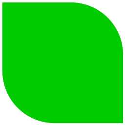
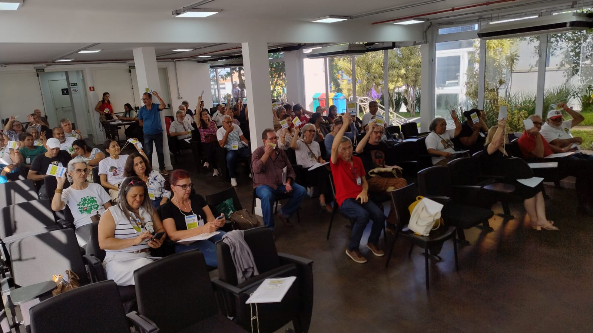
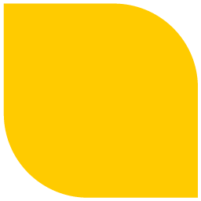
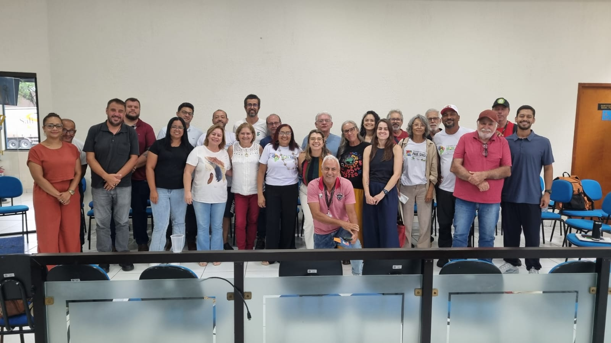

Território em Foco
Acompanhe as ações, projetos e resultados nos territórios rurais do Brasil.
Este informativo nasceu para a gente ficar mais perto. Queremos contar tudo o que está rolando nos Territórios da Cidadania, fortalecendo a ponte entre quem vive no campo e quem faz a gestão pública. É com esse espírito de união que chegamos a 2026: o ano em que o PNDTS vira a peça-chave para transformar a vida no interior.
Evolução Histórica do PNDTS
243 territórios originais em situação de inação
Reestruturação pelo MDA/SFDT, Resolução CONDRAF n. 16/2024
Portaria MDA n. 35, 16 de setembro de 2025
O PNDTS vira peça-chave para a transformação nacional
2026: O Ano da Consolidação
O que são os Territórios da Cidadania?
Os Territórios da Cidadania são o recorte de referência para o planejamento, a articulação e a participação social. É nesses espaços que as políticas públicas e as ações de desenvolvimento territorial sustentável são articuladas, debatidas e encaminhadas pelos Colegiados de Desenvolvimento Territorial.
São espaços geográficos contínuos, urbanos e rurais, definidos por critérios ambientais, econômicos, sociais, culturais e políticos, que reúnem grupos sociais diversos, conectados por elementos de identidade e coesão social, cultural e territorial.
Alimentos saudáveis
Produção agroecológica e soberania alimentar
Adaptação climática
Resiliência nos territórios rurais
Redução da pobreza
Inclusão produtiva e renda no campo
Acesso a políticas
PRONAF, ATER, PAA, PNAE e Plano Safra
Bem viver no campo
Qualidade de vida, cultura e identidade

Os 3 Eixos Prioritários
Territórios
Governança e Decisão, com fortalecimento da participação social
Conectividade
Inclusão Digital com ampliação do acesso
Educação do Campo
Identidade e Cultura, com valorização dos saberes locais
Políticas Articuladas no Território
Crédito
PRONAF
Assistência Técnica
ATER
Reforma Agrária
Compras Públicas
PAA / PNAE
Comercialização
Energias Renováveis
Associativismo e Cooperativismo
O que é o CPDT?
O Comitê Permanente de Desenvolvimento Territorial (CPDT) é uma instância estratégica vinculada ao CONDRAF. Atua como o braço executivo responsável por tirar o PNDTS do papel e transformá-lo em ação, o motor que transforma as leis em soluções práticas, garantindo que a gestão pública ouça e atenda quem realmente vive no território.
Governo
MDA/SFDT, órgãos federais e Superintendências Estaduais do MDA
Sociedade Civil
Movimentos sociais, agricultores familiares e comunidades tradicionais

O Impacto em Números
Projetos CNPq / PAS Nordeste · Chamada 17/2025
A Chamada CNPq 17/2025 selecionou 53 projetos de extensão tecnológica nos territórios rurais do Nordeste, articulando universidades, comunidades e CODETERs para fortalecer a produção agroecológica e a inclusão digital nos territórios da cidadania.
Bahia
18 projetos abrangendo territórios do semiárido, Chapada Diamantina e Recôncavo, com foco em agroecologia e convivência com o semiárido.
Maranhão
8 projetos nas regiões dos Cocais, Baixada Maranhense e Pré-Amazônia, fortalecendo cadeias produtivas extrativistas e agricultura familiar.
CE / RN / PB / PI
19 projetos cobrindo territórios do Cariri, Seridó, Borborema e Serra da Capivara, com ênfase em tecnologias sociais hídricas e inclusão digital.
AL / PE / SE
8 projetos na Zona da Mata, Agreste e Sertão, integrando extensão universitária com comunidades quilombolas e assentamentos da reforma agrária.
Áreas Temáticas
Agroecologia
Protagonismo feminino
Tecnologias Sociais
Educação Popular
Articulação em Rede
Plataforma Digital
Sistema integrado de gestão territorial com dados abertos, mapeamento participativo e painel de indicadores em tempo real.
Círculos de Escuta
Encontros periódicos nos territórios para ouvir demandas, acolher propostas e fortalecer a participação social nas decisões.
FORPROEX
Articulação com o Fórum de Pró-Reitores de Extensão das Universidades Públicas para integrar ensino, pesquisa e território.
Produção Acadêmica
Publicações, relatórios técnicos e artigos científicos gerados a partir das experiências nos territórios rurais.
TED: O Motor de Planejamento Territorial
Uma das iniciativas mais promissoras de 2026 é a parceria entre o Ministério do Desenvolvimento Agrário e Agricultura Familiar (MDA) e a Universidade de Brasília (UnB), através do Centro de Gestão e Estudos Estratégicos (Cegafi). O projeto integra o Sistema de Informações Territoriais (SIT) com a plataforma Colheita Digital, criando um ecossistema informacional robusto para gestão territorial.

Quem Faz o Território

“O território não é só um mapa. É gente, é cultura, é o chão onde a gente planta e colhe sonhos. Quando o Estado chega junto, a transformação acontece de verdade.”
Agenda
Reunião do CPDT
Pauta:
- Redação final e validação do Guia de Homologação e Reconfiguração de Territórios
- Aprovação do Plano de Trabalho do CPDT 2026

Seu Papel no Território
Lideranças
Participem dos CODETERs e fortaleçam a governança territorial nas suas comunidades.
Pesquisadores
Inscrevam-se nas chamadas CNPq e conectem a universidade ao território.
Gestores
Articulem as políticas públicas nos territórios e acompanhem os indicadores no SIT.
